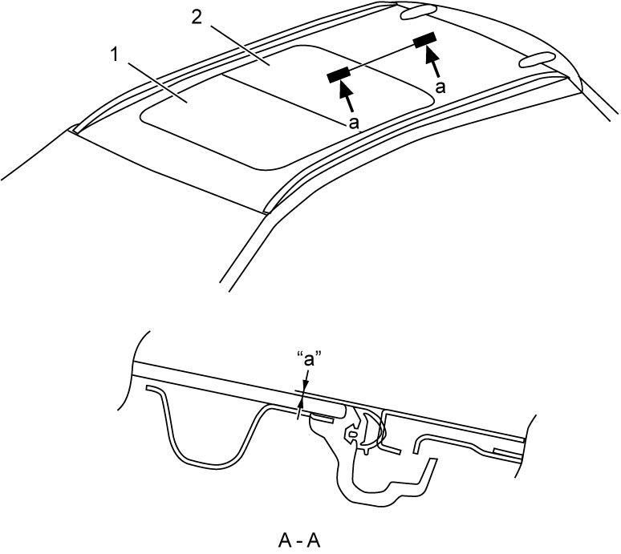

9I
| Sun Roof Glass Adjustment |
1)Loosen 8 sun roof glass fixing bolts and move front sun roof glass (1) and rear sun roof glass (2) up and down 2 to 3 times. After this, sun roof glasses can be positioned in both vertical and horizontal directions by elasticity of sun roof weather-strip.
2)Position sun roof glasses as specified.

Sun roof glass position
“a”: 1 mm (0.04 in.)

 "Expand image")
3)Tighten 8 sun roof glass fixing bolts to specified torque referring to Sun Roof Components.
4)After installing all parts and adjusting them properly, check sun roof for proper operation (slide, tilt, anti-pinching function).